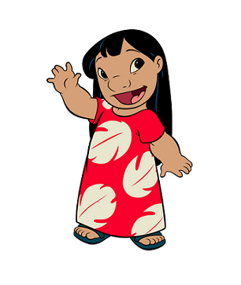
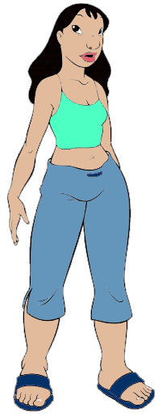
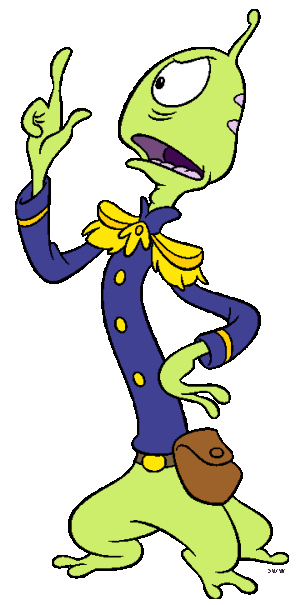
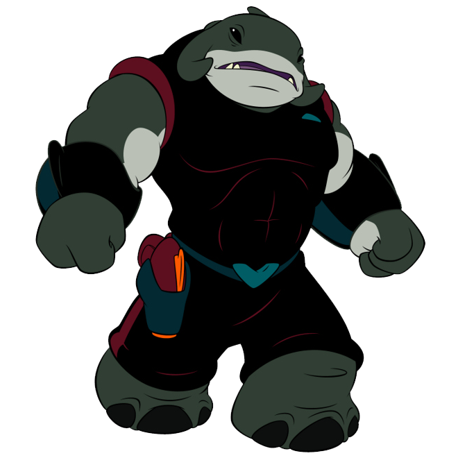

Lilo
She is very carrying and helped stitch through a lot when he first came home.
She even gave him multiple of chances. He was never suppose to be up for
adoption in the first place. But she was willing to take him in a pet.

Nani Pelekai
She is lilo older sister. She is very over protective. Although she was
not so happy with lilo adopting stitch. Overtime she learned how to
become his friend.

Pleakley
He is a creature from a different planet. He was on the chase for stitch
at first because he was just made and had escaped.

Captain Gantu
He was the captain of there planet. He was on the chase to get stitch
since